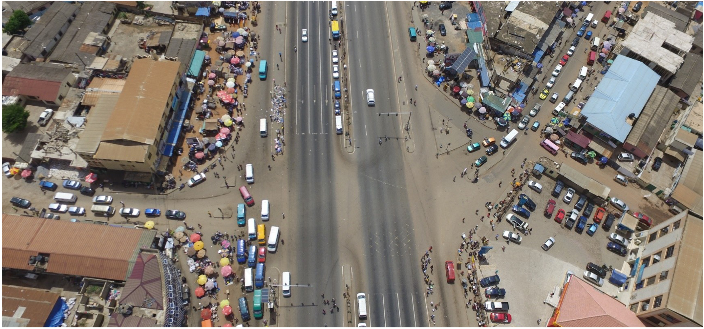

UCL-UoG International Training Workshop
Welcome

Welcome to our 3-day international workshop on research project: “Reducing the burden of various infectious diseases due to limited urban drainage infrastructure & sanitation in flood-prone Accra”, which is an international collaborative project between University College London (UCL) and the University of Ghana (UoG) funded by the UCL Global Engagement Funds. The participating institutions are:
- UCL Department of Geography
- UCL Civil, Environmental & Geomatic Engineering
- Regional Institute for Population Studies
Part of this workshop is to deliver a 2-day interactive training session on introductory GIS programming in RStudio for basic risk mapping for particular hazards or disease indicators in Ghana. This training session has been designed as an introduction to the core programming tenets for basic spatial analysis in RStudio. Participation in these workshops, in-person, is free of charge. This online resource has been designed as reference to this session and will remain available indefinitely to participants.
Structure
All lectures and computer practicals will be delivered in-person. The table below contains the lessons and learning materials:
| Day | Session | Topics |
|---|---|---|
| 11/06/2024 | Lecture | Geo-processing in RStudio [Slides] |
| Practical I | Setting-up the Software | |
| Practical II | Basic mapping using the tmap [Data] |
|
| 12/06/2024 | Lecture | Risk mapping in RStudio [Slides] |
| Practical I | Handling gridded data in RStudio [Data] | |
| Practical II | Decision-based overlay risk mapping |
IMPORTANT NOTE: Please bring your own laptops with you to participant in the computer practicals
Contact Details of Instructors
Beyond the course, please feel free to contact me via email for help, or if you would like a Zoom meeting for additional support if need be. My contact information is:
| Name | |
|---|---|
| Dr. Anwar Musah | a.musah@ucl.ac.uk |
| Dr. Mumuni Abu | mabu@ug.edu.gh |